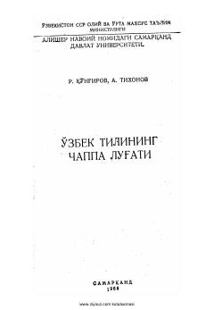

OTSo'zlarning oxirgi tovushlari bo'yicha tuzilgan ilk o'zbekcha chappa lug'at.
Mazkur qo'llanma o'zbek tilining dastlabki chappa lug'ati bo'lib, turkiy tillar doirasida so'zlarni oxirgi tovushlariga qarab joylashtirish tajribasidir. Lug'at so'zlarning oxirgi tovushlariga qarab tizimlashtirilishi orqali ularning morfologik tuzilishi va so'z yasalish xususiyatlarini o'rganishga yordam beradi.